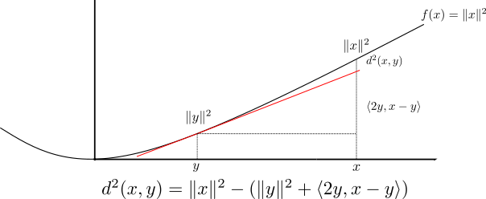
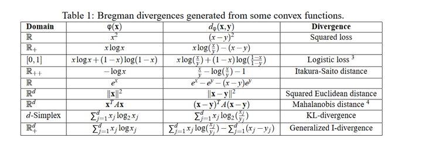

2. Bregman divergence#
The surprising result - due to Banerjee, Gou, and Wang 2005 is the following,
If you have some abstract way of measuring the “distance” between any two points and, for any choice of distribution over points the mean point minimises the average distance to all the others, then your distance measure must be a Bregman divergence.
2.1. Squared Euclidean Distance#
One member of the Bregman divergence family is the squared Euclidean distance (SED), i.e.,
SED can be represented as follow,
Obviously, the derivative of \(\Vert \pmb{y}\Vert^2\) is \(2\pmb{y}\). Now, we take a look on the term \(\Vert \pmb{y}\Vert^2+\langle 2\pmb{y},\pmb{x}-\pmb{y}\rangle\) which is the value of the tangent line to \(\Vert \pmb{y}\Vert^2\) at \(\pmb{y}\) evaluated at \(\pmb{x}\). This means the whole expression is just the difference between the function \(f(\pmb{x})=\Vert \pmb{x}\Vert^2\) at \(\pmb{x}\) and the value of \(f\)’s tangent at \(\pmb{y}\) evaluated at \(\pmb{x}\). That is,

2.2. Bregman divergences#
So far, the only one constraint which is placed on the distance measure \(d^2\) is that it be non-negative for all possible choices of point \(x\) and \(y\). This is equivalent to the function \(f\) always sitting above its tangent, that is,
Obviously, the above condition placed on the function \(f\) is equivalent to functions \(f\) being convex. This means that we can derive a distance measure \(d_f\) that has a similar stucture to the SED by simply choosing a convex function \(f\) and defining,
Distance defined like this are precisely the Bregman divergence and the convexity of \(f\) guarantees they are non-negative for all \(x,y\in\mathbb{R}^n\).
Kullback-Leibler(KL) divergence can be expressed as a Bregman divergence using the convex function,
